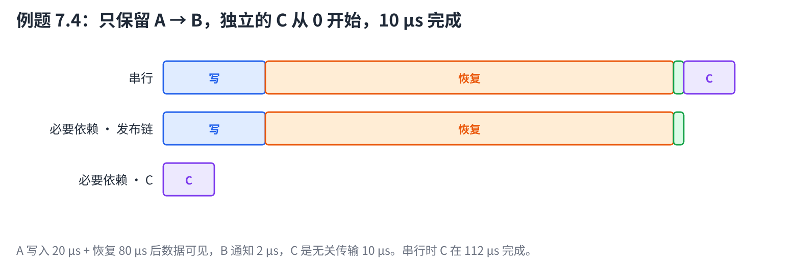
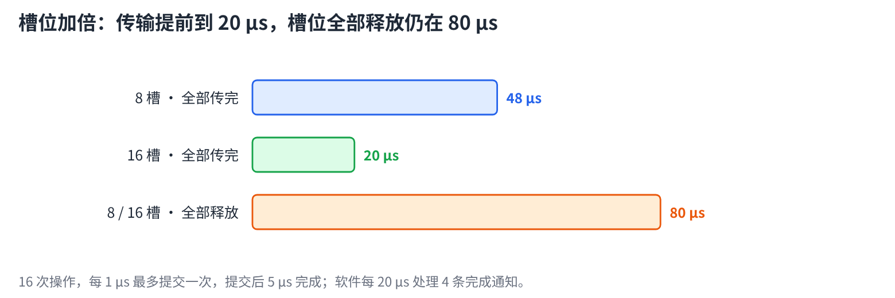
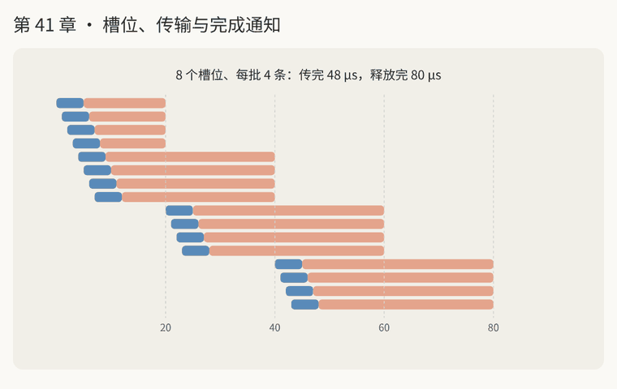

第 41 章 · 数据交接、顺序与状态管理：什么时候能读、能覆盖、能释放
本地运行
git clone https://github.com/wikieden/ai-infra-from-constraints
cd ai-infra-from-constraints/code/notebooks
pip install jupyterlab torch numpy
jupyter lab ch41_handoff_state.ipynb也可以下载后直接用 VS Code 打开 .ipynb 运行。需要 GPU 的章节在 Colab 里选「代码执行程序 → 更改运行时类型 → GPU」。
本章回答：数据"发完了"、"对方能看见了"、"对方用完了"为什么是三个时刻？8192 条通信关系为什么能从 8.5 MiB 状态压到 0.64 MiB？去掉一条多余的顺序约束，为什么能让一个操作提前 100 μs？槽位加倍，为什么持续吞吐没变？
讲解日期：2026-11-24 · 上一章：第 40 章 远程访问的路径与并发 · 下一章：第 42 章 共享网络中的拥塞与可靠性
对应原文：materials/ai-infra-book/manuscripts/07-数据中心网络.md§7.4 L520–L663（例题 7.4，图 7-30 到 7-39）；§7.4.2 Jetty 略讲
本章缩写：Jetty = UB 事务层的应用端点 · QP = Queue Pair（队列 / 对，RDMA 的通信端点）· head-of-line blocking = 队头阻塞 · 1Pipe = 网络提供全局全序的研究系统。全部缩写见 缩写与术语表
讲解
第一步：一份分片的一生：发完、可见、用完（2026-11-24）
类比：传托盘。 托盘送到下一道工序（发送完成），对方看到了（可见）；但对方还在用里面的材料，用完之前你不能往这个托盘里放下一批。
原文 L522–L540：一份分片的流程：生成 → 写入远端 → 对接收方可见 → 发出就绪通知 → 读取处理 → 释放空间。
- 源缓冲：接口保证传输不再读它，就能复用（发送完成，比如 5 μs）。
- 目的缓冲：要等接收方用完（比如消费者 8–12 μs 读，12 μs 才能覆盖）。6 μs 就写下一份：网络每个字节都对，程序却用了错的数据。
图 41-1 · 6 μs 提前覆盖目的地址就是错误操作。
把"必须等哪个事件"画成边，得到依赖图：节点的完成时刻 = 所有前驱的最晚完成 + 自身时间；最长的链是关键路径。缺边（可见 → 通知）就读到未发布的数据；多余的边（无关传输也等）就多等。让计算直接写进通信库注册的缓冲区能省一次复制，但事件顺序随之变严。
一句话：发送完成、对方可见、对方用完是三个事件，分别决定源缓冲、读取、目的缓冲何时可用。
第二步：应用身份和传输状态分开存（略讲）（2026-11-24）
类比：公司的快递收发室。 每个员工有自己的工号（应用端点），但寄往同一个城市的包裹共用一条物流线路（传输状态），不必每人单独签一份物流合同。
原文 L544–L596：64 个应用端点、每个访问 128 个目标，共 8192 条关系；端点 256 B、每条关系绑定 64 B、每份传输状态 1 KiB：
| 状态总量 | |
|---|---|
| 每条关系独占传输状态 | 8.52 MiB |
| 同一目标共享 | 0.64 MiB（约 1/13） |
| \(K\) 组隔离：\(Le + LPr + KPt\) | 3 组 912 KiB、4 组 1040 KiB（超 1 MiB） |
共享省存储，代价是争用同一条通道的发送窗口和恢复资源（队头阻塞）；关键业务单独一组、其他共享。OpenURMA 的实现尺寸：Jetty 20 B + 内存段 32 B、传输通道 56 B，RoCE 每条连接 512 B：\(S_{\mathrm{pair}} = 512NM + 32N\)，\(S_{\mathrm{UB}} = 52N + 56M\)。\(N = M = 1024\)：512 MiB vs 108 KiB（约 4855 倍）；256 KiB 片上缓存，逐对在 \(N \ge 23\) 溢出，UB 在 \(N \ge 2428\)。溢出后每次操作重读上下文：PCIe 外设网卡 +1000 ns，片上控制器 +200 ns。
一句话：应用身份按端点存，传输进度按目标共享；状态从 \(O(LP)\) 变成 \(O(L + P)\)，缓存能装下更多关系。
第三步：只保留必要的顺序（2026-11-24）
类比：快递员送三件货。 A 要先放进柜子再发取件短信 B；C 是另一家的货。非要按 A、B、C 的顺序送，C 就白等了半天。
例题 7.4（原文 L606–L622）：A 写入 20 μs，随后恢复 80 μs 后数据才可见；B 通知 2 μs；C 是无关传输 10 μs。
| 安排 | 发布链完成 | C 完成 | 全组完成 |
|---|---|---|---|
| A、B、C 依次 | 102 μs | 112 μs | 112 μs |
| 只保留 A → B | 102 μs | 10 μs | 102 μs |
| 恢复变 200 μs，依次 | 222 μs | 232 μs |

图 41-2 · 全组只提前 10 μs，C 提前 102 μs：对等着 C 的下游，隔离比全组提前重要得多。
资源依赖也是边：所有操作共用一个处理单元时，两种安排都 112 μs。OpenURMA 按需指定顺序：要求等前序的请求最多等约 155 ns，不要求的不承担；一个发起方被停住，另外四个发起方的 8 个请求仍在约 242 ns 内全部发出。RoCE 同一 QP 必须严格按序。
读的时刻才算数（原文 L630–L636）：D 在 2 μs 更新、标志 3 μs 可见；消费者 1 μs 提前读了 D、4 μs 读标志：保存的是新标志、旧数据。按序返回不能把旧值变成新值：要么看到标志再读，要么提前读、检查冲突再重读。
一句话：网络只为真正有依赖的操作保证顺序，独立操作照常推进；顺序要约束实际读取的时刻。
第四步：槽位要等完成通知处理完才释放（2026-11-24）
类比：餐厅的桌子。 客人吃完了（传输完成），服务员还没收桌（处理完成通知），下一桌客人就坐不下。桌子多几张能让一时的高峰进来，但收桌的速度决定一晚上能接多少桌。
原文 L640–L658：16 次操作、每次 8 KiB，每 1 μs 最多提交一次，提交后 5 μs 完成；软件每 20 μs 处理 4 条完成通知：
| 槽位 | 全部传完 | 全部槽位释放 |
|---|---|---|
| 8 | 48 μs | 80 μs |
| 16 | 20 μs | 80 μs |

图 41-3 · 蓝色是传输，橙色是等软件处理完成通知。
持续吞吐 = 每秒处理的完成通知数 × 每项字节：\(200{,}000 \times 8\) KiB ≈ 1.64 GB/s；要到 50 GB/s 需每秒约 610 万项。加槽位只容纳突发；持续负载要提高完成处理速率或加大每项载荷。 槽位满了就暂停提交，就是背压；故障时要先停止新提交、结束或隔离旧请求、再释放空间（版本号、撤销权限），否则迟到的旧写入会覆盖新对象。
一句话：槽位的释放速度决定持续吞吐；完成处理跟不上，背压就会顺着共享状态传播。
动画演示：槽位、传输与完成通知

可交互版：animations/41-handoff-state.html（滑块：槽位数 4–16；每批处理的完成通知 2–16 条）。
怎么看：
- 16 行是 16 次操作：蓝色是提交到传输完成，橙色是等完成通知被处理（第四步）；
- 竖线是软件每 20 μs 处理一批；
- 右边显示全部传完和全部释放的时刻；
- 播放：8 槽 → 16 槽（传完提前、释放不变）→ 每批处理 8 条（释放提前）。
练习与作答记录
题 1（第二步）：32 个端点、每个访问 256 个目标，\(e = 256\)、\(r = 64\)、\(t = 1024\) B。独占和共享各需多少 KiB？2 MiB 能放几组隔离？
作答记录：（待作答）
题 2（第三步）：A 写入 15 μs、恢复 60 μs、B 通知 3 μs、C 无关传输 40 μs。两种安排下 C 和全组各何时完成？
作答记录：（待作答）
题 3（第四步）：完成通知每 10 μs 处理 6 条，每项 16 KiB。持续吞吐上限多少 GB/s？要到 50 GB/s 每秒要处理多少项？
作答记录：（待作答）
原书实验 7-9、7-10（L598、L660）。想多练可以做。
口诀
托盘送到、对方看到、对方用完，是三个时刻；
工号各管各的，同城包裹共一条线；
柜子先放再发短信，别家的货不用等；先读的旧值，晚点返回也还是旧的；
桌子多容高峰，收桌快才接得多。
本章复习卡片
I146（发送完成 / 可见 / 用完三个事件与依赖图）、I147（共享传输状态 8.52 → 0.64 MiB、\(O(LP) \to O(L + P)\)、溢出点 23 vs 2428；例题 7.4 只保留必要顺序）、I148（槽位释放决定持续吞吐 1.64 GB/s、背压与故障回收）。练习做完后，按答错、卡住的地方再补。
附录 · 延伸阅读
留给以后深入学习用，不影响本章主线。★ 是建议先读的。
推荐阅读
| 读什么 | 读哪里 | 读它为了什么 |
|---|---|---|
| ★ AII 第 7 章 | §7.4 L520–L663 | 本章原文 |
| 李博杰，Unified Bus 背后的思考 | Jetty、事务序 | 设计动机（原文 [^ub-design]） |
| Li 等，1Pipe（SIGCOMM 2021） | 全局全序 | 设计背景 |
| OpenURMA 论文 | §10 顺序 | 按需顺序的仿真 |
| 第 25 章 提交、搬移与同步 | event 与缓冲 | 单机版本的同一件事 |
数学原理
- 依赖图的最长路径：完成时刻 = max(前驱完成) + 自身。
- 状态计数：独占 \(LP(r + t)\)，共享 \(LPr + Pt\)。
- 吞吐 = 服务速率 × 每项字节（完成处理是服务台）。
公式清单
| 公式 | 意思 |
|---|---|
| \(S_{\mathrm{private}} = Le + LP(r + t)\)，\(S_{\mathrm{shared}} = Le + LPr + Pt\)，\(S(K) = Le + LPr + KPt\) | 状态 |
| \(S_{\mathrm{pair}} = 512NM + 32N\)，\(S_{\mathrm{UB}} = 52N + 56M\) | 实现尺寸 |
| 持续吞吐 = 完成处理速率 × 每项字节 | 背压 |
代码对照：把本章的数字用代码算一遍
代码
ai-infra/solutions/chapter-code/ch41_handoff_state.py，测试tests/test_ch41.py：
bash cd ai-infra/solutions/chapter-code uv run python ch41_handoff_state.py uv run pytest tests/test_ch41.py
| 讲义 | 写法 | 跑出来 |
|---|---|---|
| 第二步 | state_bytes(L, P, groups=K)、impl_state(N, M)、overflow_n() |
8.52 / 0.64 MiB；4855 倍；(23, 2428) |
| 第三步 | ordering(recover) |
(112, 10, 102) |
| 第四步 | slots_sim(slots=n) |
(48, 80)、(20, 80) |
代码里才看得到的 3 件事：
slots_sim每批只处理已经传完的那几条，按完成先后取前 4 条，所以 8 槽时第 9 次提交要等 20 μs 的第一批。ordering的串行安排里 C 等的是整条发布链（写 + 恢复 + 通知）。impl_state的 UB 一项没有 \(NM\) 项：关系绑定放在软件映射里，网卡不存。
自己改一改（不影响练习答案）：
- 给
slots_sim加"每处理一条通知要 1 μs"的模型，求能维持的最大提交速率。 - 把
ordering改成三条独立链，算全组和每条链的完成时刻。 - 用
overflow_n算 1 MiB 缓存的溢出点。